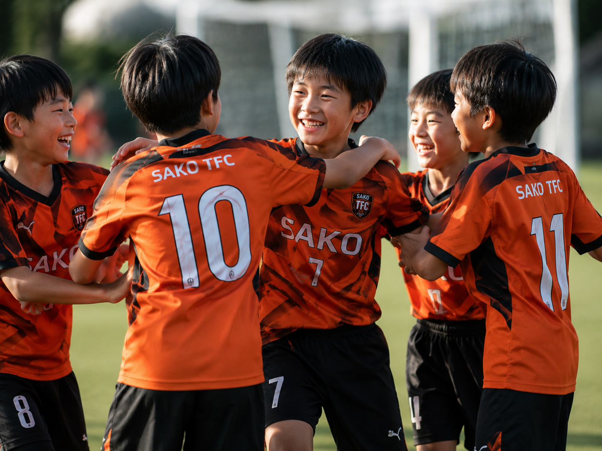

一人ひとりの目標設定と振り返りを大切にし、自分自身で成長を考える機会をつくります。
03 / JUNIOR
JUNIOR
小学3年生〜小学6年生経験の有無は問いません。サッカーが上手くなりたい気持ちを大切に、自分の成長に向き合うジュニアカテゴリーです。

ABOUT JUNIOR
自分で「成長サイクル」を
回せる人間になる。
JFA公認コーチライセンスを持つスタッフを中心に、全体をオーガナイズします。
「学ぶ・知る」の中で成功体験を重ね、好きだからこそ続けられる成長を目指します。
ACTIVITY
活動概要
TARGET小学3年生〜小学6年生
経験の有無は問いません。
DAY土曜日
小学6年生は月・水・土での活動参加が可能と案内されています。
AREA名古屋市中村区内
御田中・豊正中・ほのか小などを中心に活動予定です。
FEE
会費について
| 項目 | 対象・頻度 | 料金 |
|---|---|---|
| 入会金 | 入会時 | 22,000円 |
| 月会費 | 週1回の選手 | 5,000円 |
| 月会費 | 小学6年生 / JUNIOR YOUTH活動参加 | 7,000円〜8,000円 |
※入会金にはユニフォーム代金（1セット）とスポーツ保険代金を含む案内です。活動日・料金区分は今後変更となる可能性があります。最終的な条件はお問い合わせ時にご確認ください。
TRIAL
無料体験、受付中。
まずは実際の活動に参加し、クラブの雰囲気やトレーニングを体験してください。体験のお申し込みはお問い合わせフォームから受け付けます。
体験・入団について、
まずはお気軽にご相談ください。
体験練習・入団・その他のお問い合わせを、ひとつのフォームから受け付けています。